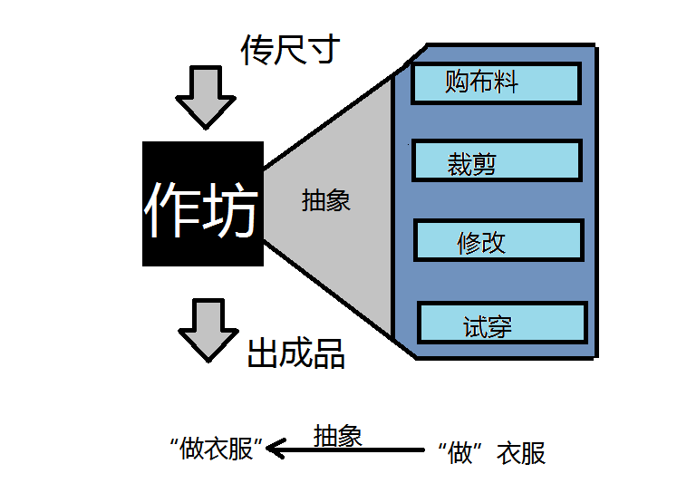

由于我二级c++上机没有通过，这次不得不再考一次，怀着忐忑的心情准备了一周，每天花了5,6个小时！考试的过程比我想象中顺利很多！这次的考试让我对c++面向对象的概念理解的又深了一点！
一直有一个模糊的概念，什么是对象？当然米老师也论述过，但是总有一个疑惑萦绕在心里，面向过程？面向对象？当今天的我的理解也许依然很稚嫩，但是见证了我认识编程的一个过程！
在我心里，面向过程与面向对象是相同的，都是为了解决一定的问题，所建立的一种解决模式，而面向对象，使我们解决起来以更符合人的思维习惯！所以处理逻辑关系较复杂的事物，面向对象在这个领域更有优势！
他们都是一个以叙述者的身份介绍事情的发展过程，面向对象是从抽象到具体，面向过程一直就是在具体的做着！
举一个简单的例子：做一件衣服
面向过程：
第一步：量尺寸
第二步：买布料
第三步：裁剪
第四步：试穿
第五步：修改
第六步：付款
面向对象：
第一步：建作坊
第二部：告诉老板尺寸
第三步：交货

而易举我们看出他们的区别，同样是做衣服，面向对象将很多做衣服的细节封装在了“建作坊”里，制作一件衣服，也许看不出区别，如果是一千件，区别就出来了，面向对象我们只需告诉老板一千件的要求，而面向过程就是我们是老板要做出一千件这样的衣服！
也许我举得例子并不恰当，大家可以扶正！